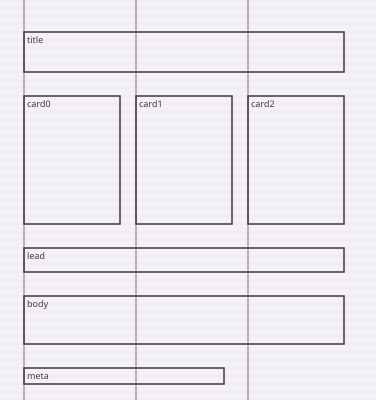
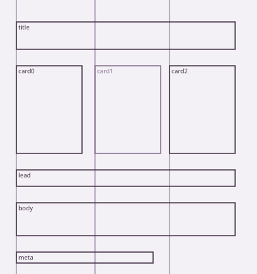

A layout grid is a claim. This tool takes measured element coordinates (px, pt or mm, at any zoom), tests every candidate base unit against the evidence, and only exports spacing, column and type-scale tokens the numbers actually support. No default 4/8pt. Uncertainty is kept visible.


ilghar.studio